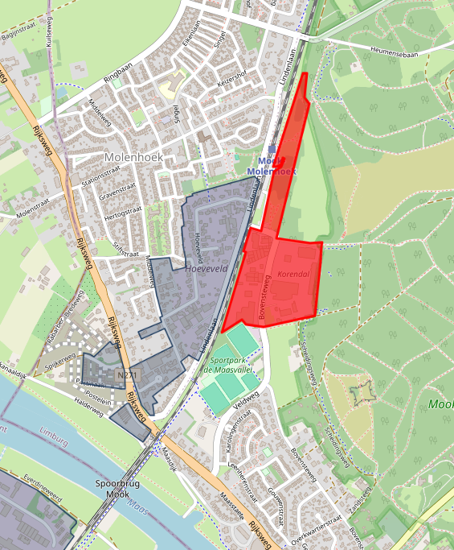
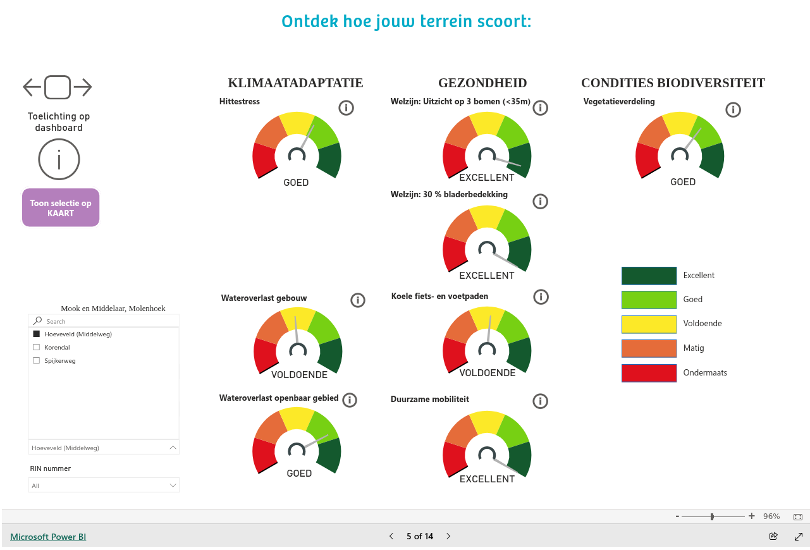
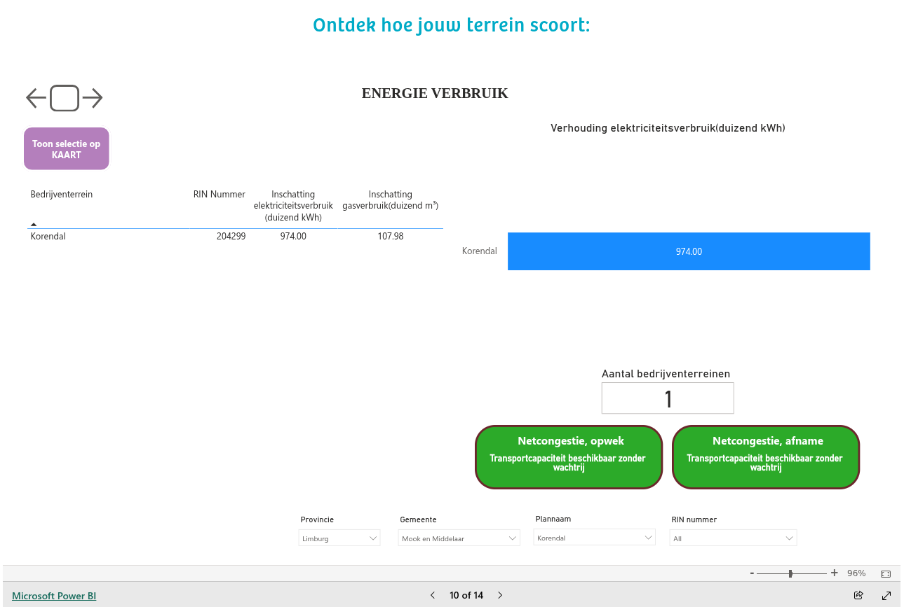

70% van de Nederlandse bedrijventerreinen is slecht voorbereid op wateroverlast door klimaatverandering. Ook heeft 5 op de 6 terreinen een duidelijk tekort aan groen. Dat blijkt uit een analyse van Werklandschappen van de Toekomst, waarin voor het eerst alle 3.713 Nederlandse bedrijventerreinen zijn onderzocht op klimaat, gezondheid en biodiversiteit.
WerkLandschappen van de Toekomst
Het dashboard van WerkLandschappen bevat een groot aantal klimaat adaptatie overviews, die ook verder gaan, zoals bijv. over de hoeveelheid beschikbare en gebruikte energie.
Industriegebieden in Mook en Middelaar (volgens WerkLandschap):
(Spijkerweg is reeds woningbouw, Spoorzone wordt natuurgebied)

Onze industrie terreinen doen het op het gebied van klimaatadaptatie goed, zie dashboard,
Hoeveveld zijn wateroverlast en koele fiets- en wandel-paden verbeterpunten
Korendal: zijn biodiversiteit, hittestress, koele fiets- en wandel-paden verbeterpunten
Spijkerweg bestaat bnet meer.

